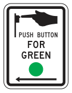

A driver should always pay special attention to pedestrians (persons on foot). However, there are certain safety rules pedestrians should follow.
Laws and Safety Tips for Pedestrians
- Obey traffic control signals unless otherwise directed by a pedestrian control signal.
- Do not cross the street between two intersections. It is dangerous to cross in the middle of a street.
- Use sidewalks when available, and do not walk in the street.
- Walk on the left side of the road if there are no sidewalks. Step off the pavement when a car approaches.
- If you cross a street at any point other than within a crosswalk at an intersection, you (the pedestrian) must yield the right-of-way to all vehicles.
- If you cross a street without using a pedestrian tunnel or overhead pedestrian crossing which has been provided, you (the pedestrian) must yield the right-of-way to all vehicles.
- When crossing at a crosswalk, keep right if possible.
- Blind, partially blind, or disabled individuals may carry a white cane while walking. Others must not display a white cane on any public street or highway.
- No person may stand in the road for the purpose of soliciting a ride, contributions, or business. A person may stand in a road to solicit a charitable contribution if authorized to do so by the local authority having jurisdiction over the road.
- Do not suddenly walk or run into the street in the path of a vehicle. These sudden actions may make it impossible for the vehicle operator to yield.
- Wait on the curb, not in the street, until the traffic signals change to green or read “Walk.”
- Always wear white or light colored clothing and/or carry a light or reflector when walking at night.
- Look both ways before crossing the street and before stepping out from behind parked cars.
- Be extra careful when getting off a streetcar or bus.
- Get in and out of cars on the curb side of the road when possible.
- Do not walk on a road when you are under the influence or consuming an alcoholic beverage. Alcohol is a contributing factor to pedestrian traffic crashes.
- Pedestrians should be aware that local authorities may have ordinances that require pedestrians to comply with the directions of an official traffic control device (signals, signs, etc.) and prohibit pedestrians from crossing a road in a business district or a designated highway, except in a crosswalk.

Laws and Safety Tips for Motorists
- If you see a pedestrian crossing or attempting to cross the street, slow down, use your horn if necessary, and be prepared to stop.
- Be alert to a pedestrian guided by an assistance animal or carrying a white cane. The white cane indicates the person may be blind, partially blind, or disabled. A driver shall take the necessary pre-cautions to avoid injuring or endangering a pedestrian crossing or attempting to cross the street. The driver shall bring the vehicle to a full stop if injury or danger can only be avoided by that action.
- Watch for individuals who are blind at bus stops, intersections, business areas, and near schools for the blind.